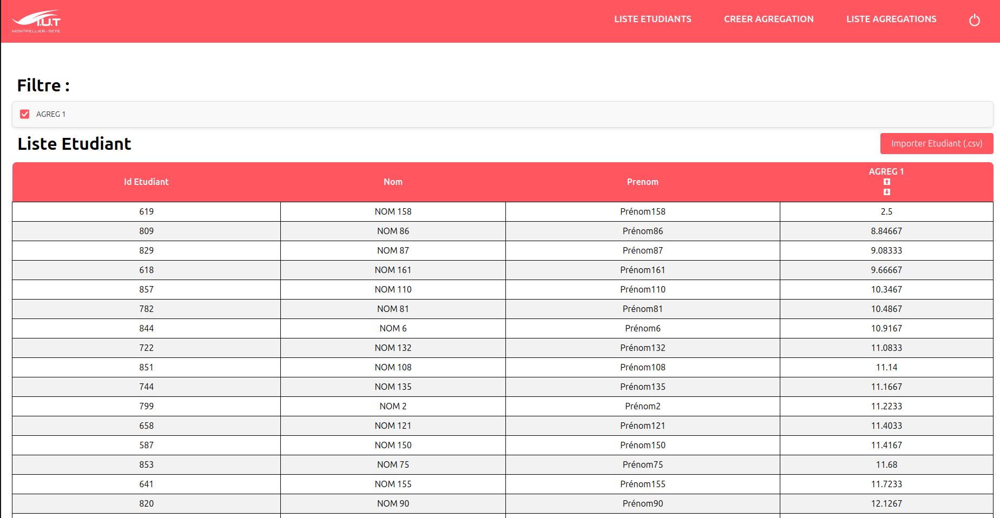

Ce projet a été fait dans le cadre de notre formation à l'IUT de Montpellier.
Ce projet consistait à réaliser un site web d'aide à la poursuite d'études et à la direction des études,
il a été codé sous PHP, HTML et CSS et on a utilisé MySQL pour la base de
données.
Evidemment je n'ai pas été seul à réaliser ce projet, nous étions une équipe de 5 à travailler dessus, nous avons
commencé à travailler sur ce projet
à la fin du mois de septembre et nous l'avons terminé au début du mois de janvier. Nous avons travaillé sur ce projet de manière itératif, c'est à dire
que toutes les 3 semaines, nous faisions un rendu au client, puis on a fait des daily meetings afin de mieux s'organiser
au sein de l'équipe.
Pour finir, nous avons utilisé gitlab
pour mettre en commun notre travail.
Durant ce projet, j'ai pu m'occuper de la création de la base de données et par la suite j'ai réalisé de nombreuses fonctionnalités, en voici quelques exemples : la création d'agrégations, afficher une liste de notes et pouvoir les trier de manière décroissante ou croissante
Voici un exemple de la page qui trie les notes de manière croissante
En réalisant ce projet, cela m'a permis de solodifier mes acquis sur certaines compétences durant ma formation.